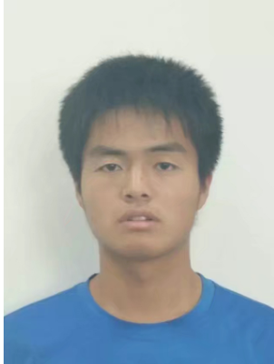

Kun-Peng Ning 宁鲲鹏PhD student
Peking University (PKU), |
 |
| PiCO: Peer Review in LLMs based on the Consistency Optimization. Kun-Peng Ning, Shuo Yang, Yu-Yang Liu†, Jia-Yu Yao, Zhen-Hui Liu, Yong-Hong Tian, Yi-Bing Song, Li Yuan†. The Thirteenth International Conference on Learning Representations ( ICLR ), 2025. |
| Is Parameter Collision Hindering Continual Learning in LLMs? Shuo Yang, Kun-Peng Ning, Yu-Yang Liu†, Jia-Yu Yao, Yong-Hong Tian, Yi-Bing Song, Li Yuan† The 31st International Conference on Computational Linguistics ( COLING ), 2025. |
| Towards Better Query Classification with Multi-Expert Knowledge Condensation in JD Ads Search. Kun-Peng Ning, Ming Pang†, Zheng Fang, Xue Jiang, Xi-Wei Zhao, Zhan-Gang Lin, Li Yuan† ACM Conference on Information and Knowledge Management ( CIKM ), 2024. [PDF] |
| Bidirectional Uncertainty-Based Active Learning for Open Set Annotation. Chen-Chen Zong, Ye-Wen Wang, Kun-Peng Ning, Hai-Bo Ye, Sheng-Jun Huang† European Conference on Computer Vision ( ECCV ), 2024. |
| Active Learning for Open-set Annotation. Kun-Peng Ning, Xun Zhao†, Yu Li, Sheng-Jun Huang†. IEEE Conference on Computer Vision and Pattern Recognition ( CVPR ), 2022. |
| Improving Model Robustness by Adaptively Correcting Perturbation Levels with Active Queries. Kun-Peng Ning, Lue Tao, Songcan Chen, Sheng-Jun Huang†. The 35th Association for the Advancement of Artifificial Intelligence ( AAAI ), 2021. [PDF] |
| Asynchronous Active Learning with Distributed Label Querying. Sheng-Jun Huang†, Chen-Chen Zong, Kun-Peng Ning, Hai-Bo Ye. The 30th International Joint Conference on Artificial Intelligence ( IJCAI ), 2021. [PDF] |
| Tackle balancing constraint for incremental semi-supervised support vector learning. Shuyang Yu, Bin Gu†, Kun-Peng Ning, Haiyan Chen, Jian Pei, and Heng Huang. The 25th ACM SIGKDD International Conference on Knowledge Discovery & Data Mining ( KDD ), 2019. [PDF] |
| GPT as a Monte Carlo Language Tree: A Probabilistic Perspective. Kun-Peng Ning, Jia-Yu Yao, Yu-Yang Liu, Mu-Nan Ning, Li Yuan†. arXiv preprint arXiv: 2501.07641, 2025. |
| LLM Lies: Hallucinations are not Bugs, but Features as Adversarial Examples. Jia-Yu Yao, Kun-Peng Ning, Zhen-Hui Liu, Mu-Nan Ning, Li Yuan†. arXiv preprint arXiv: 2310.01469, 2023. |